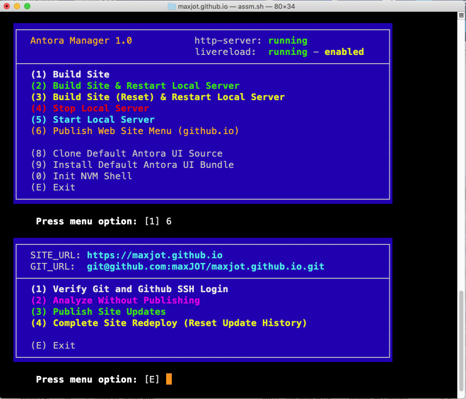
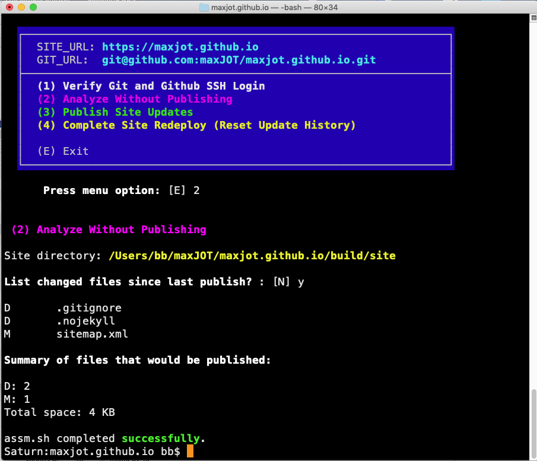
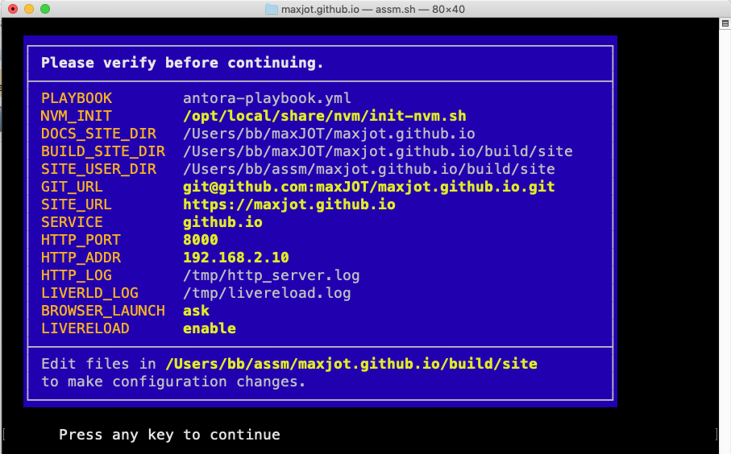

Antora Single Site Manager (ASSM)
Does this work, do you think?
Core Purpose
-
Manage a single Antora site from build to publish
-
Provide both interactive menu mode and command-line option mode
-
Reduce common deployment pitfalls and configuration errors
Environment & Safety Controls
-
Verifies Bash ≥ 4
-
Performs self-checksum integrity validation
-
Prevents source execution of the script
-
Detects OS (macOS/Linux) and adapts behavior
-
Uses enhanced terminal UI (colors, boxed menus, protected input)
Configuration Management
-
Automatically creates and manages:
-
site.conf -
git.conf -
postproc.sh -
readme.txt
-
-
Extracts Antora playbook settings
-
Parses custom
output:sections (usesyqif required) -
Builds absolute paths for the site output directory
-
Provides configuration verification screen before execution
Antora Build Features
-
Builds site via
npx antora -
Supports:
-
Standard build
-
Reset build
-
Build + restart local server
-
-
Detects missing
.gitrepository and offers to initialize one -
Enables optional LiveReload integration
-
Supports
ANTORA_DEVmode for local development
Local Development Server Management
-
Starts and stops:
-
http-server -
livereload
-
-
Detects and kills existing processes by port
-
Writes log files for both services
-
Automatically opens browser (configurable: yes / no / ask)
Git & GitHub Publishing (github.io)
-
Verifies Git version requirements
-
Validates GitHub SSH connectivity
-
Restores missing SSH keys from backup archive
-
Maintains backup of working SSH keys
-
Protects
.gitfromantora --cleanby:-
Relocating repository outside build directory
-
Creating symlink back into generated site
-
Publishing Enhancements
-
Temporarily disables LiveReload before publishing
-
Restores LiveReload after publishing
-
Creates
.nojekyll(required for GitHub Pages + Antora) -
Ignores
.DS_Store(macOS) -
Displays file change statistics and upload size summary
UI Management
-
Download default Antora UI bundle
-
Clone default Antora UI source repository
-
Organize UI files using date-based directories
Post-Processing Features
-
Modify generated HTML to:
-
Disable/restore LiveReload during publishing
-
Convert custom
(A)markers into styled callout badges
-
-
Keeps reference markers invisible to "Copy Code" behavior
Overall Impact
ASSM acts as a protective automation wrapper around Antora, combining:
-
Build automation
-
Local development server control
-
Git repository protection
-
GitHub Pages publishing
-
Configuration validation
-
Error detection and recovery
It transforms a single Antora site into a controlled, menu-driven deployment environment rather than relying on manual command sequencing.
{kind=link}

{kind=link}

{kind=link}

Examples
antora-playbook.yml
site:
title: maxJOT
start_page: maxJOT::index.adoc
url: https://maxjot.github.io
content:
sources:
- url: .
ui:
bundle:
url: ./default-ui/19-DEC-25
supplemental_files: ./supplemental-ui
asciidoc:
attributes:
myfiles: /maxJOT/_attachments
myimages: ../_attachments
includesdir: maxJOT::includes
experimental: true
antora:
extensions:
- '@antora/lunr-extension'
git.conf
#==================================================================== # Filespec: /Users/bb/assm/maxjot.github.io/build/site/git.conf # Site Name: maxjot.github.io # Date: 25-Feb-26 #==================================================================== # # Set GIT_URL to your remote GitHub repository used to publish the site # (GitHub Pages), e.g.: "git@github.com:maxJOT/maxjot.github.io.git" GIT_URL="git@github.com:maxJOT/maxjot.github.io.git" # Set SITE_URL to the location where your site is published. SITE_URL="https://maxjot.github.io" # SSH_KEYPAIR defines the names of the SSH keys for passwordless # secure GitHub authentication (SSH user equivalence). # See GitHub Docs – SSH authentication, for more info. SSH_KEYPAIR=( id_ed25519 id_ed25519.pub )
site.conf
#==================================================================== # Filespec: /Users/bb/assm/maxjot.github.io/build/site/site.conf # Site Name: maxjot.github.io # Date: 25-Feb-26 #==================================================================== # # TCP port and TCP/IP address (hostname) of the http-server # providing the Antora Site on your local computer. # (usually this does not need to be changed.) HTTP_ADDR=192.168.2.10 HTTP_PORT=8000 # Node-LiveReload service monitors files for changes and # automatically reloads your web browser. This eliminates the # need to stop and start your local http-server between consecutive # site rebuilds. Set this to 'enable' or 'disable'. LIVERELOAD=enable # After generating the Antora site, automatically open your # web browser to view the site served by the local http-server. # Set this to 'yes' or 'no', or 'ask'. BROWSER_LAUNCH=ask # Service to use when publishing the Antora generated site. # Currently only 'github.io' has been implemented. SERVICE=github.io # OS specific script to initialize the node shell environment. NVM_INIT="/opt/local/share/nvm/init-nvm.sh"
postproc.conf
#!/usr/bin/env bash
#====================================================================
# Filespec: /Users/bb/assm/maxjot.github.io/build/site/postproc.sh
# Site Name: maxjot.github.io
# Date: 25-Feb-26
#====================================================================
#
# Requries $1: function to run, $2: function parameter.
function demo { status_0=$1; }
function publish {
# Requires : HTML file to process, : task.
# Temporarily remove livereload prior to publishing the site.
#
local workfile; workfile=$( mktemp )
case $2 in
modify) awk '/livereload\.js"><\/script>$/ &&
$0 !~ /\{\{env\.HOSTNAME\}\}/ {
print "<!--"$0"-->"; next } { print
}' "$1" > "${workfile}" || { status_0=error; return; } ;;
restore) awk '/^<!--.*livereload\.js"><\/script>-->$/ {
sub(/^<!--/,""); sub(/-->$/,"") } { print
}' "$1" > "${workfile}" || { status_0=error; return; } ;;
esac
# If output differs, replace file.
cmp -s "$1" "${workfile}"
case $? in
0) rm -f "${workfile}"; status_0=none ;;
1) mv "${workfile}" "$1"; status_0=modified ;;
2) echo status_0=error ;;
esac
}
function callout {
# Requires $1: HTML file to process.
#
# Use !A-Z! markers, e.g. ! A! anywhere in .adoc documents as a
# reference badge, similar to Asciidoc callouts. Post-processing
# will convert these markers, e.g. ! A! (A), to letter-badges, just
# like Asciidoc callouts, but without any Asciidoc placement
# restrictions. The reference markers are invisible to the
# "Copy code" function. Color and appearance are defined in the
# maxJOT.css global stylesheet (.doc .coalpha).
#
if grep -q '![A-Z]!' "$1"; then
local workfile; workfile=$( mktemp )
awk '{ for (i = 65; i <= 90; i++) { letter = sprintf("%c", i)
marker = "!" letter "!"
repl = "<span class=\"coalpha\" " \
"data-value=\"" letter "\"></span><b>(" letter ")</b>"
gsub(marker, repl) } print
}' "$1" > "${workfile}" || { status_0=error; return; }
# If output differs, replace file.
cmp -s "$1" "${workfile}"
case $? in
0) rm -f "${workfile}"; status_0=none ;;
1) mv "${workfile}" "$1"; status_0=modified ;;
2) echo status_0=error ;;
esac
else
status_0=none
fi
}
$1 "$2" "$3"
## END
(A) There must be no space between the exclamation marks and the letter.
Folder Structure
/Users/dude/maxJOT ├── maxjot.github.io │ ├── antora-playbook.yml │ ├── antora.yml │ ├── assm.sh │ ├── build │ ├── default-ui │ ├── modules │ ├── node_modules │ ├── package-lock.json │ ├── package.json │ └── supplemental-ui
/Users/dude/assm/ ├── maxjot.github.io │ └── build │ └── site │ ├── git.conf │ ├── postproc.sh │ ├── site.conf │ └── sshkeys.tar ├── readme.txt └── yq